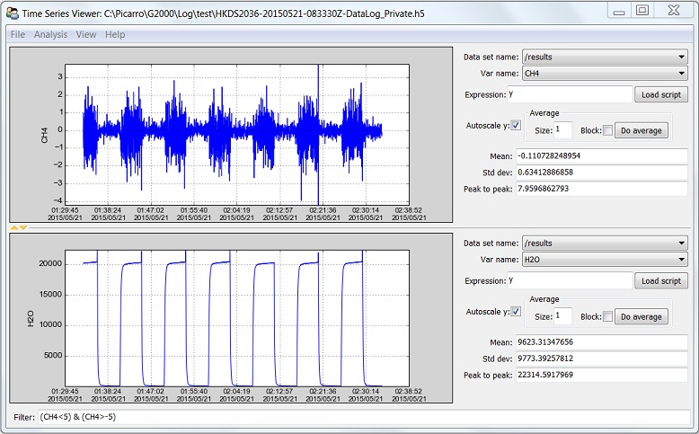

User’s Guide¶
Main menu of DatViewer
File Menu¶
Open H5¶
Open a Picarro data file (HDF5 format) for data analysis and visualization. After opening the data file, you may create new Time Series Plot.
Load Config¶
Load a configuration file (ini format) to restore parameters of workplace. See Save configuration for details.
Unpack Zip File¶
Unpack zip file and concatenate all H5 files inside into a single H5 file. See Concatenate H5 Files for details.
Concatenate H5 Files¶
Concatenate H5 files and zip archives of H5 files into into a single H5 file. After selecting path of data files, DatViewer will automatically search a H5 file in the zip/folder and look for all available variables in the H5 file. All these available variables are listed in the left panel, and users can use “>>” button to put variables to the right panel for concatenation.

Large dataset: see Concatenate huge volume of data files.
See also:
Convert DAT to H5¶
Convert data file from DAT to HDF5 format. Details about these two formats are described below:
DAT format: DAT files accepted by DatViewer store tabular data (numbers and text) in plain text.
- Each line of the file is a data record. Each record consists of one or more fields, separated by whitespaces.
- The first line of data file indicates column names.
- There must be a field “EPOCH_TIME” storing acquisition epoch time (expressed as seconds since Jan 1, 1970) of the data. Otherwise the first and second fields must be “DATE” and “TIME”. The “DATE” field must have the format “mm/dd/yyyy” or “yyyy-mm-dd”, and the “TIME” field must have the format “HH:MM:SS(.sss)” where (.sss) means optional fraction of seconds.
HDF5 format: HDF5 is a data model, library, and file format for storing and managing data. Please visit The HDF5 Home Page When converting DAT to HDF5 format, DatViewer creates a table named “results” to contain data.
Convert H5 to DAT¶
Convert data file from HDF5 to DAT format. See Convert DAT to H5 for details about these two formats.
Note
When converting H5 to DAT format, each column has a fixed width of 26 characters. So if column headings are too long (more than 25 chars), DatViewer will convert or truncate them. For example, column name “fineLaserCurrent_1_controlOn” will be replaced by “fineLaserCurr_1_ctrlOn”.
Interpolation¶
Perform interpolation on a time grid with a constant interval.
Block Average¶
Divide dataset into small blocks with block size specified by the user. Average is calculated for data in each block, and results are saved in a new H5 file.
Note
Block size needs to be much larger than average data interval.
As data interval is normally not a constant (unless interpolation is performed), fluctuation in data interval will affect block averaging if block size is comparable to average data interval.
Time Series Plot¶
See also:
Data set name and Var name¶
A HDF5 file can store one or more tables. Each of these table is called a Data set. A table can contain one or more columns. Each column is called a variable (Var).
Expression¶
Expression is a mathematical function that applies on the selected data and transforms the plot. Here is an example of expression:
y + CO2
Here y is the data of selected variable (y-axis data of the plot) and CO2 is the data of CO2 column in selected table. So this expression transforms the plot to be summation of selected variable and CO2 data.
Note
All variables in the selected dataset can be used in the Expression field by calling the variable name. However, if variable name starts with a number, it needs to be called with a prefix of “dat”. For example, “12CO2” needs to be called as “dat12CO2” in the Expression field. Besides, x and y are defined as short-cuts for x-axis and y-axis data of the plot, correspondingly.
Autoscale Y¶
When this option is selected, DatViewer will autoscale on y axis to make sure all data within the range of x axis is displayed.
Average¶
If Block is checked, block average is calculated when Do average button is clicked. Otherwise moving average is calculated.
For block average, N average specifies block size in unit of minute. For moving average, N average specifies subset size in unit of data points.
Note
Averaging is performed after application of Filter and Expression fields.
Mean, Std dev, and Peak to peak¶
Mean, Std dev (Standard deviation) and peak to peak are all statistical information of data in the current view.
Filter¶
Filter is a mathematical expression that specifies data to include or exclude from plot(s). Here is an example of filter:
(CH4 < 5) & (CO2 < 10)
where CH4 and CO2 are both variable names in the selected data set. So this filter removes all rows with CH4 >= 5 or CO2 >= 10 from dataset.
Note
All variables in the selected dataset can be used in the Filter field by calling the variable name. However, if variable name starts with a number, it needs to be called with a prefix of “dat”. For example, “12CO2” needs to be called as “dat12CO2” in the Expression field.
Note
Filter field is applied before Expression field.
Available logical operators in the Filter field: & (AND), | (OR), ~ (NOT) and ^ (XOR).
Correlation/XY Plot¶

See also
- For details about plot canvas, see Canvas
- For details about File menu, see Save configuration